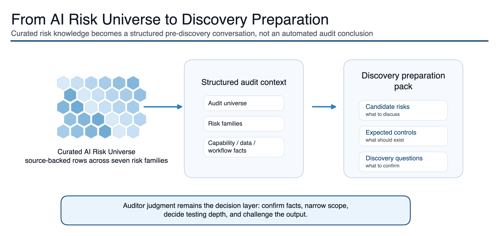
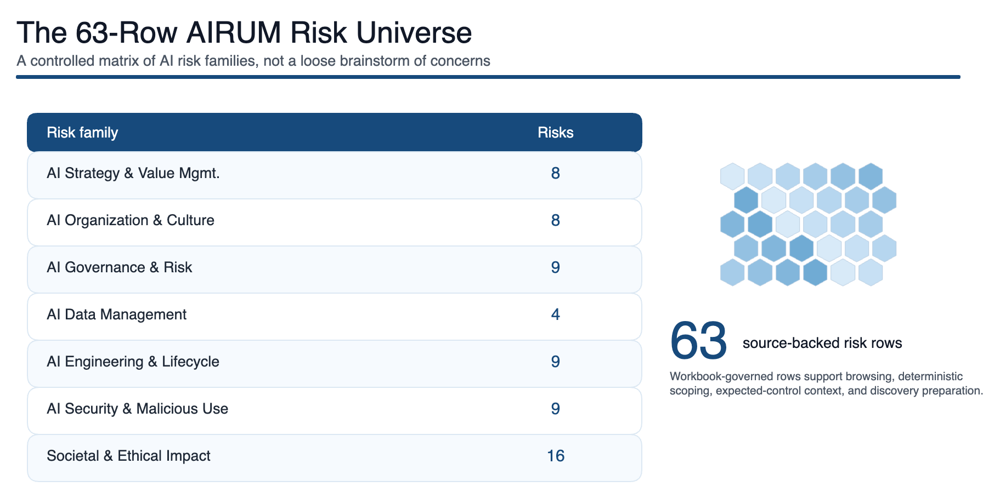

What AIRUM is
AIRUM stands for AI Risk Universe Matrix. It has two connected purposes. First, it is a curated AI Risk Universe for exploration, education, methodology development, and risk-based AI audit planning. Second, it is a deterministic Risk Scoping layer that turns structured audit context into candidate AI risks, expected controls, discovery questions, lifecycle assumptions, and specialist dependencies.
The goal is not to automate audit judgment. The goal is to make the first version of the audit conversation stronger, more traceable, and easier to challenge.

The problem
AI can sit inside models, vendor platforms, business processes, spreadsheet workflows, research activities, customer-facing tools, or informal productivity shortcuts. Audit teams can scope too narrowly and miss how AI is used, or scope too broadly and create noise.
The method
AIRUM keeps the risk universe broad enough to avoid blind spots, then applies structured scoping so auditors can focus on the risks, controls, questions, and dependencies that matter for the audit context.
1. Start with context
Define the process, AI use, lifecycle stage, data dependency, vendor role, governance maturity, and specialist overlays.
2. Map likely risks
Connect context to the AI Risk Universe, expected controls, discovery questions, and dependencies.
3. Challenge the output
Keep, amend, escalate, defer, or remove risks based on discovery evidence and auditor judgment.

Teaching and research use
AIRUM can support teaching in IT audit, AI governance, digital trust, risk management, responsible AI, and applied information systems. Students can work from a short AI use case, review a candidate risk shortlist, challenge unsupported assumptions, and draft discovery questions.
Research use could compare expert manual scoping with structured AIRUM-supported scoping, test risk coverage and rationale quality, or study how AI risks should map to audit-universe processes.
Selection sample: reduced discovery working paper
A fictional, five-risk selection sample shows how AIRUM can move from broad AI risk coverage to a concrete pre-discovery working paper. It includes selected candidate AI Risks, why each risk appears, expected controls, discovery questions, evidence to request, and retain / escalate / defer / remove fields.
The sample is deliberately reduced. It demonstrates the output shape without publishing the full working method, internal scoring, source mappings, or private audit material.
Boundary
AIRUM is a working preparation concept and methodology prototype. It does not decide final audit scope, assess control effectiveness, calculate residual risk, provide legal or compliance conclusions, validate that an AI system is safe or well governed, or provide audit assurance.
This public version is intentionally reduced. It does not publish the full working implementation, internal rules, scoring logic, data mappings, private audit material, or complete methodology package.